ESSENTIAL. 01
아이보리 보틀과 주황 캡,
한 손에 쥐는 여름 한 병.
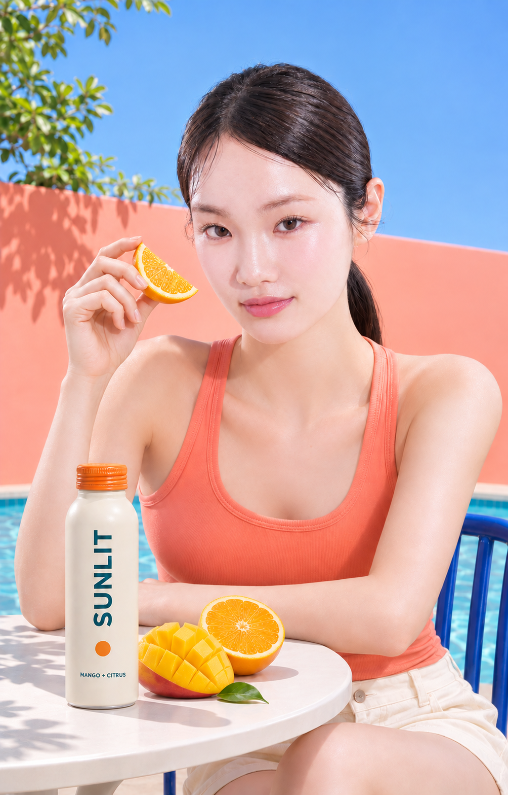
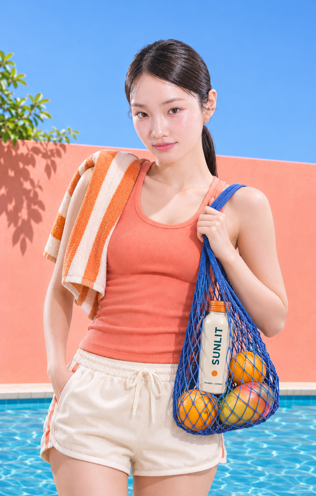
SUNLIT · MANGO + CITRUS
MANGO + CITRUS
햇살이 길어지는 계절,
망고와 시트러스의 생기를 한 병에.
움직이고, 쉬고, 다시 여름을 즐기는
당신의 순간에 SUNLIT.
ESSENTIAL. 01
아이보리 보틀과 주황 캡,
한 손에 쥐는 여름 한 병.
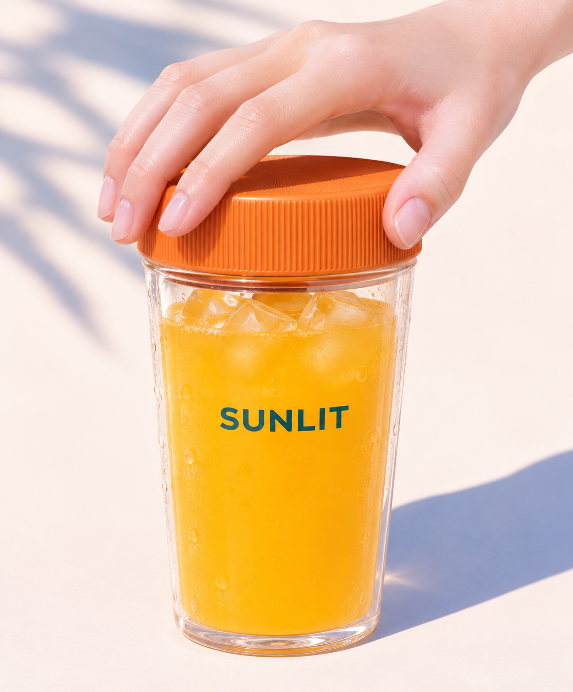
ESSENTIAL. 02
SUNLIT TUMBLER
주황 캡 텀블러에 담아,
어디서든 시원한
여름 한 잔.
가볍게 움직이는 여름
CHAPTER. 01
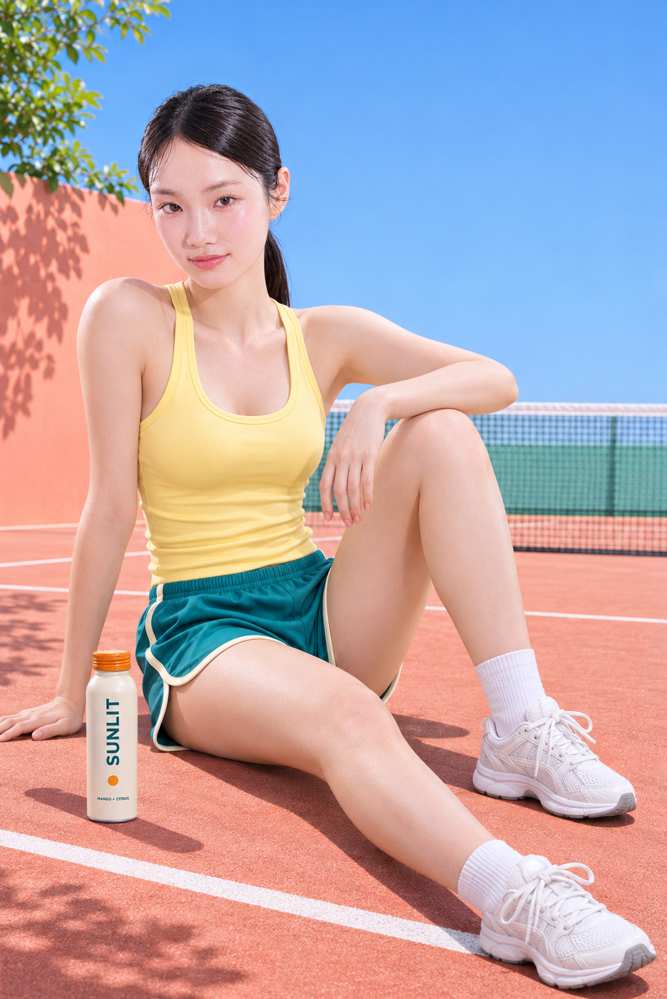
몸을 움직이는 시간도,
잠시 숨을 고르는 순간도.
여름의 리듬에
산뜻한 한 모금을 더해보세요.
움직인 만큼, 잠시 쉬어가는
여름의 한 장면.
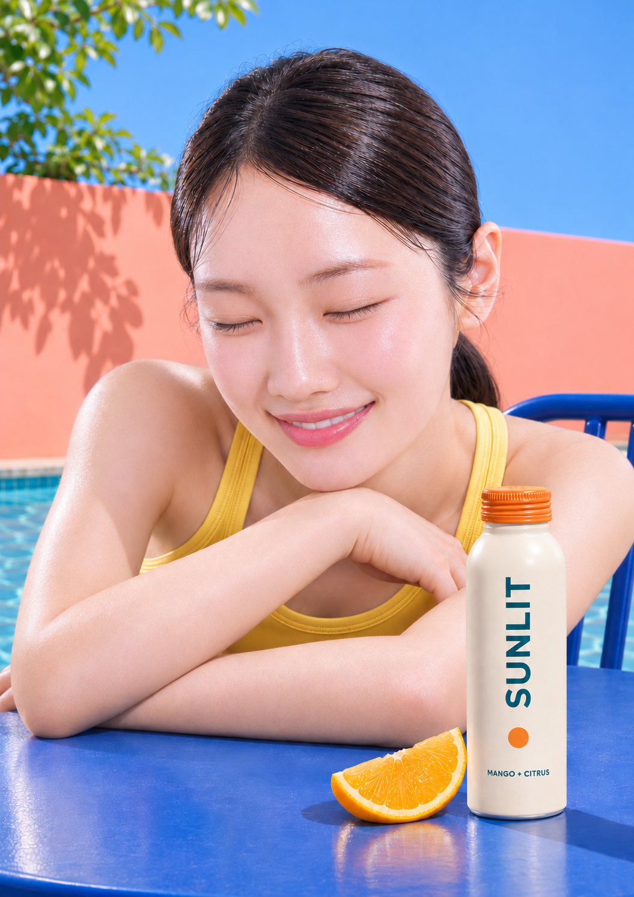
CHAPTER. 02
과일의 생기를 담아
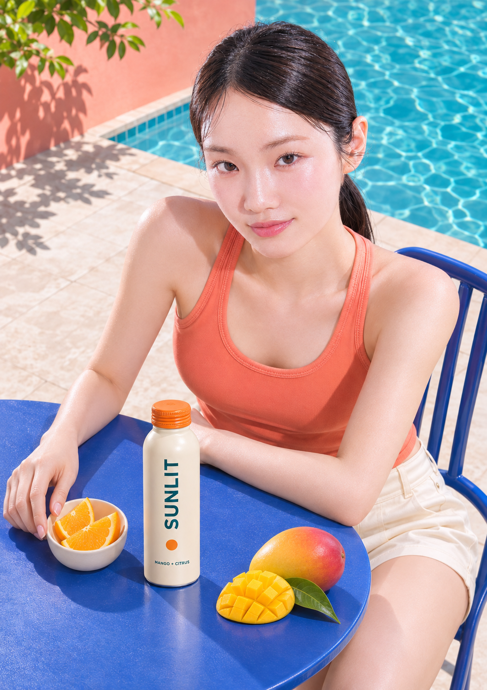
망고의 부드러운 달콤함과
시트러스의 산뜻한 인상.
햇살처럼 선명한
여름의 맛을 만나보세요.
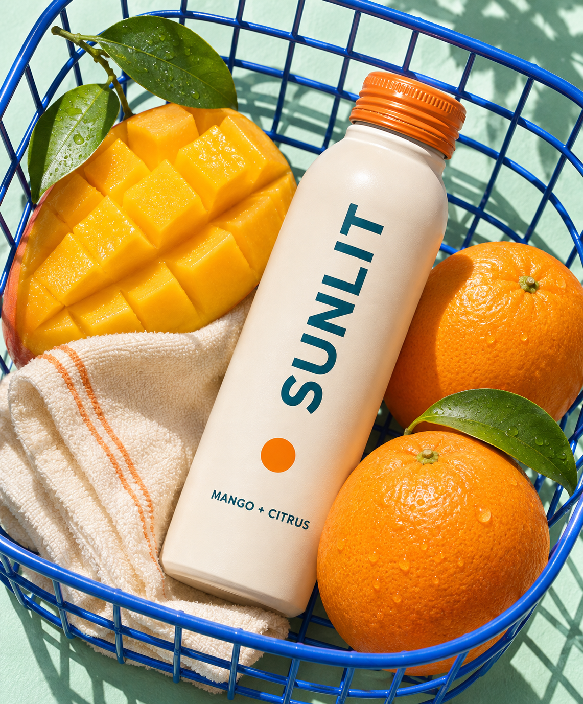
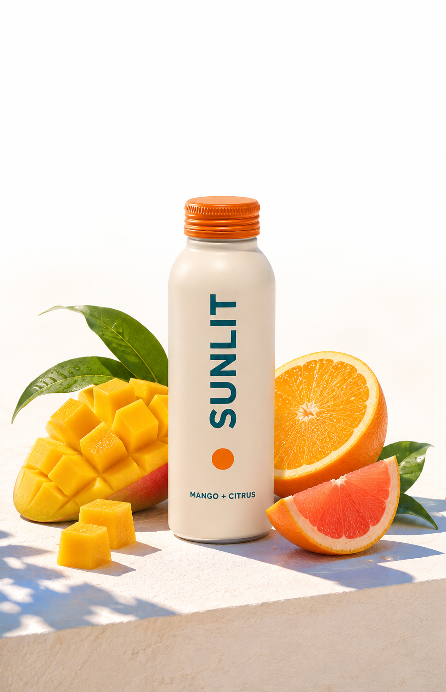
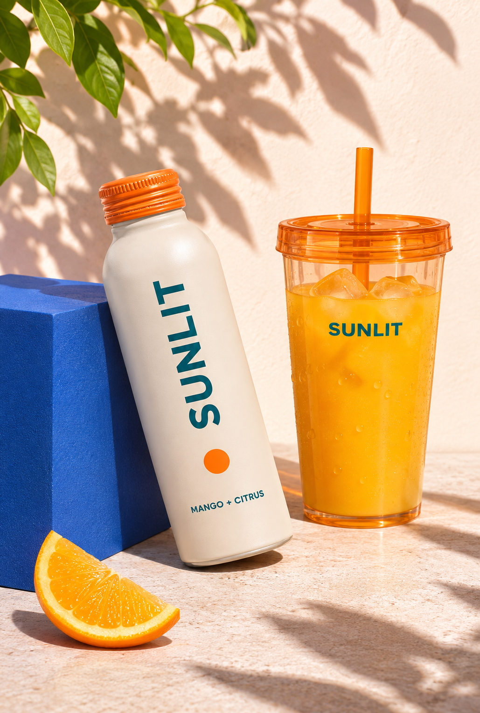
MANGO + CITRUS
CHILL · SHAKE · POUR
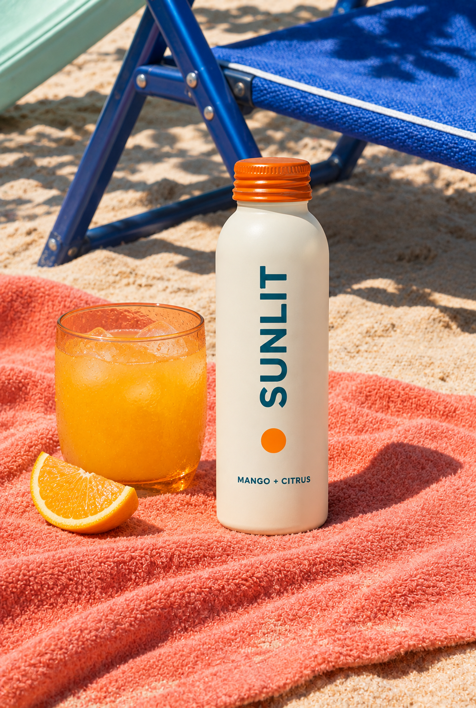
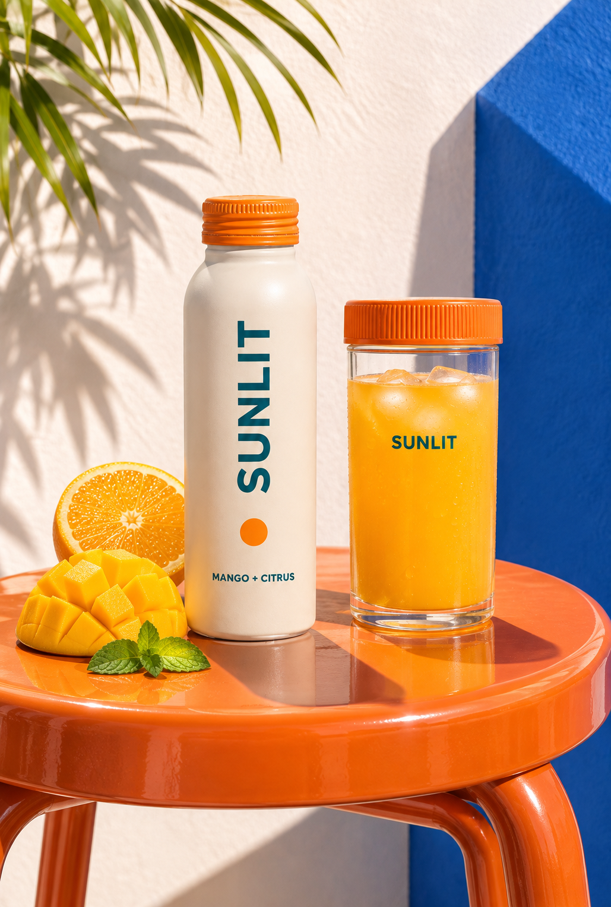
CHAPTER. 03
한 모금, 여름의 속도로
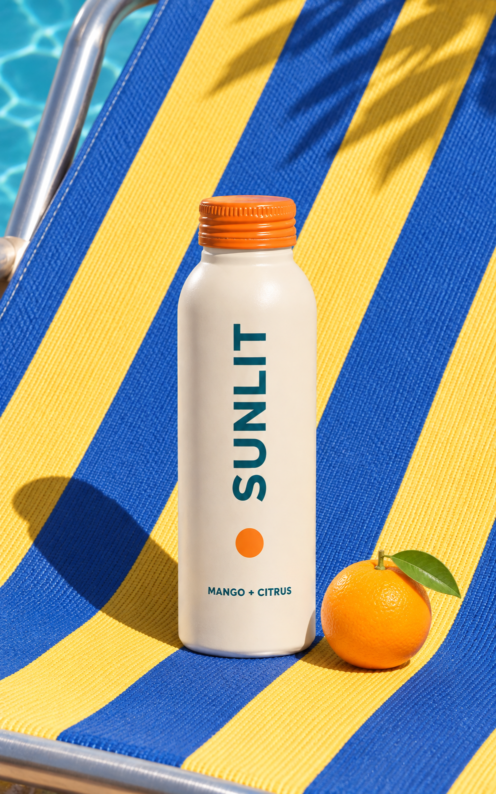